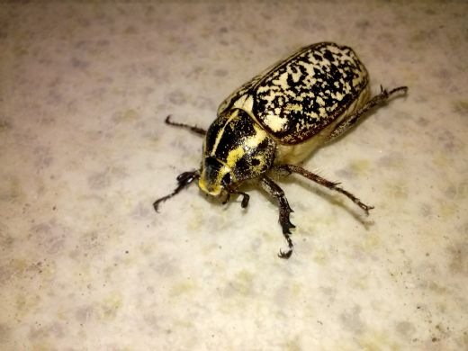
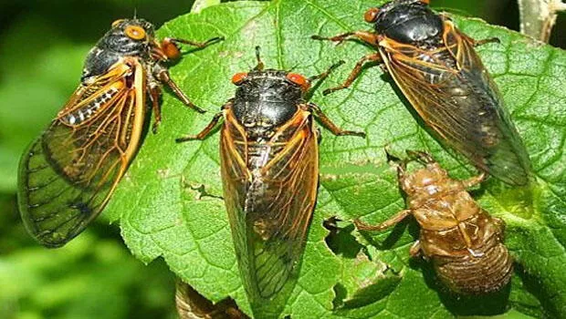
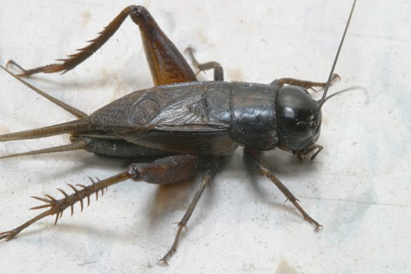
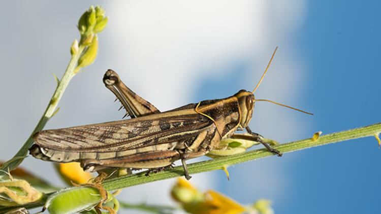
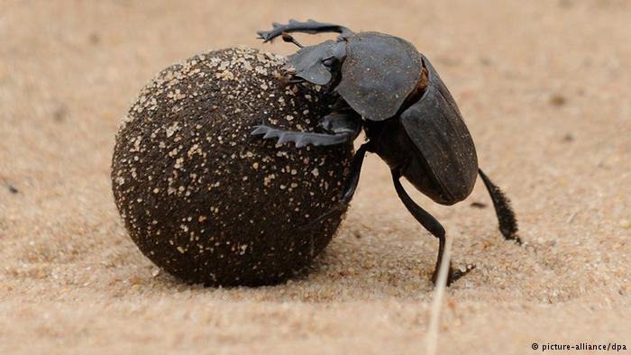
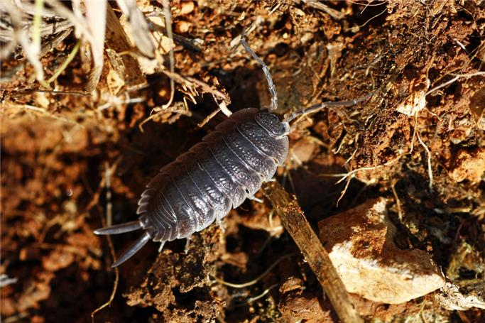
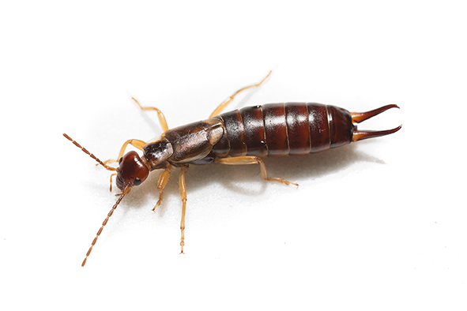
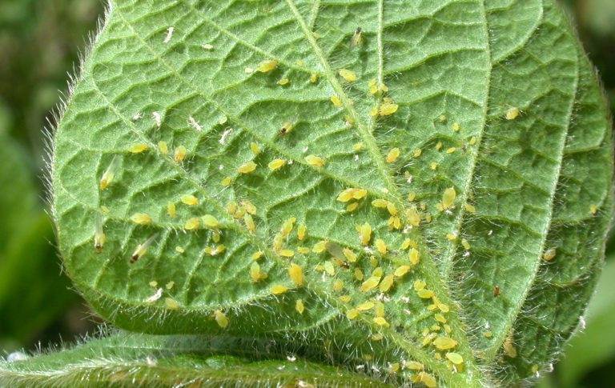
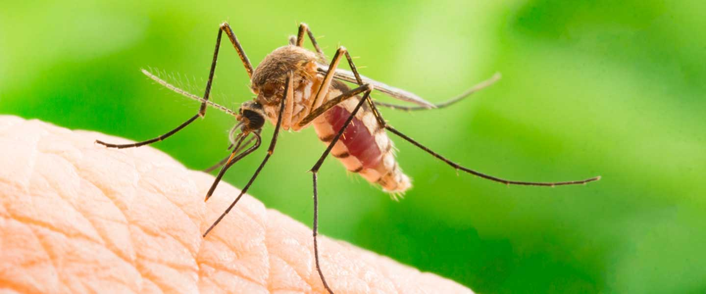
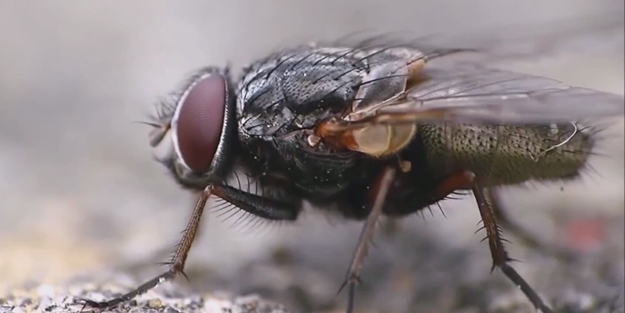

Adi mayıs böceği (Melolontha melolontha), Scarabaeidae familyasındaki Melolontha cinsinin Avrupa
böceğidir.
Yaşam döngüsü şu evrelere sahiptir: yumurta, üç larva instarı, bir pupal instar ve ergin böcek
Oval şeklindeki yumurtaları yeni bırakıldıklarında 2 x 3 mm boyutundadır, ancak su emerek daha büyük
hale
gelirler. Larvalar (kurtçuklar) beyazımsı kavisli bir vücuda, güçlü çenekleri olan büyük bir başa, iyi
gelişmiş uzun, tüylü ve sarı bacaklara sahiptir.
Larvaların tamamen gelişmesi üç veya dört yıl sürer.
En çok zararı, çim ve yonca kökleriyle beslendikleri larva evresinde verir. Erginler, çoğunlukla meşe,
akçaağaç, kayın ve erik olmak üzere çeşitli ağaçların yaprakları ile beslenir.
Haziran Böceği

Ülkemizde Haziran böceği olarak anılan bu böcekler, Scarabaeidae familyasına mensuptur ve Melolonthinae
alt familyasının bitki yiyen türleridir
Bu böceklerin larva evreleri bitkilere zararlıdır, çünkü bitki kökleriyle beslenirler, bu da gözle
görülür su stresiyle sonuçlanır ve sonuçta bitkinin ölümüne yol açar. Bu zararlının etkisi üçüncü
evreden itibaren artar.
Bir ile üç yıl arasında, çok uzun bir yaşam döngüleri vardır. Bu döngü, toprağa, bitki köklerine yakın
yumurta bırakma ile başlar. Larvalar yaz boyunca beslenir ve sonbaharda toprak altında derinlere göç
eder.
Soğuk iklimlerde larva olarak kışlarlar ve bir sonraki baharda larva gelişimlerine devam ederler.
İlk zarar bitkinin toprak üstündeki kısımlarında görünmez, zira larvalar birinci ve ikinci instar
sırasında sadece kök kılları ve organik maddelerle beslenir.
Larvalar, bir sonraki evreye geçtiklerinde daha büyük bitki kökleri ile beslenmeye başlar, bu da daha
sonra solma ve bodur büyüme belirtilerine yol açar.
Ağustos Böceği

Ağustos böceği, Hemiptera takımının ağustos böceğigiller (Cicadidae) familyasından böceklerin ortak
adıdır. Batılı dillerdeki cicada ve türevi isimleri, Latince (cicada) çekirge sözcüğünden gelir.
Genellikle bir bahar akşamında, toprağın yirmi santimetre altındaki sıcaklık 18 dereceyi geçtiğinde
açtıkları deliklerden çıkmaya başlarlar. Binlercesi, milyonlarcası yakındaki bitkilere tırmanır ve
ince kabuklarının içlerinden çıkıp kanatlı yetişkinler haline gelir.
Yer üstünde yalnızca 4-6 hafta yaşayan bu hayvanlar eşleşir, yumurta bırakır ve ölür.
Yavruları toprağın altına giriyor ve anne babaları gibi bitki köklerindeki özsuyu emerek 13 veya 17 yıl
yeraltında yaşarlar.
Ağustos böcekleri vücutlarında bulunan gergin keseler sayesinde ses çıkarır. Bu sesler çiftleşme
zamanında çıkmaya başlar. Ankara yöresinde dişbudak ağustos böceği (Cicada orni) bulunur. Bazı yörelerde
(Cırcır Böceği) ismi ile anılır.
Çin, Malezya, Burma, Kongo ve Latin Amerika'da yiyecek olarak kullanılır. Daha iri olan dişileri tercih
edilir.
Cırcır Böceği

Cırcır böceği, Gryllidae (cırcır böceğigiller) familyasını oluşturan parlak siyah renkli, yuvarlak iri
başlı, kısa kanatlı, uzun antenli, böcek türlerinin ortak adı.
2 cm boylarında olup, gündüz kazdıkları çukurlarda yalnız olarak gizlenirler, gecenin ıssızlığında
faaliyet göstererek ilham verici hoş sesleri ile öterler.
Sadece erkekleri ön kanatlarını birbirine sürterek ses çıkarırlar, dişileri kendilerine çekerler. İşitme
organları ön bacaklarında bulunan bir uzantıdadır.
Arka bacakları sıçrama görevi yapar. Fakat çekirgeler kadar sıçrayamazlar.
Toprağın altında yıllarca yaşayabilme özelliğinde olmalarına rağmen toprak üzerinde sadece birkaç hafta
yaşayabilirler.
Çekirge

Çekirge, düz kanatlılar (Orthoptera) takımından Caelifera alt takımının sıçrayıcı üyelerine verilen
genel isimdir.
Kendi vücutlarının 20 katına kadar sıçrayabilirler.
Uçarken saatte 8 mil hıza ulaşabilirler.
Birkaç tür zehirli bitki yerler ve toksinleri vücutlarında koruma altına almaya devam eder. Yırtıcıları
kötü tadı olduklarını uyarmak için parlak renklidirler.
Çekirgeler gün boyunca en aktiftir, ancak gece de beslenirler. Yuvaları veya toprağı yoktur ve bazı
türler yeni yiyecek kaynakları bulmak için uzun göçlere çıkar
Gübre Böceği

Bok böcekleri sert kabuklu böceklerdendir ve birçoğu parlak metalik renklerde ve 5–60 mm
büyüklüğündedir.
Etçil ve otçul hayvanların gübrelerini yer ve bunları top haline getirerek saklar.
Ön ayaklarının yardımıyla dışkıdan iri bir küre yapar, bu kürenin içine yumurtalarını aşılar ve küreyi
başı hep doğuya dönük olarak, arka ayaklarıyla yuvasına itip gömer. Yirmi dört gün sonra yavruları
belirmeye başlayınca, küreyi topraktan çıkarıp suya götürür. Küre suda eridiği zaman da yavrular serbest
kalır.
Bok böcekleri (Skarabe) eski Mısır’daki en yaygın sembollerden biridir.
Tesbih Böceği

Malacostraca sınıfından sayılan tesbih böceği, suda ve karada yaşama becerisine sahiptir.
Tehlikeyi hissettiği an kendini yuvarlayarak koruma altına alan tesbih böceği, tanımadıkları bir yerden
görecekleri temasla kapanır ve bölgeyi yuvarlanarak terk eder.
3 yıla kadar yaşayabilen böcekler, yılda en az iki kere 30 ile 40 yumurta vererek çoğalmasını devam
ettirir.
Karides, yengeç ve krillerle akrabadır.
Kulağakaçan

Karınlarının bitimindeki çatal şekildeki kıskaçlarıyla göze çarparlar.
Yavru bakımı yapan böceklerdir. Hem etçil (küçük böceklerle) hem de otçul olarak beslenirler.
Kışları ağaç kovukları, taş dipleri, duvar çatlakları gibi kuytu köşelerde geçirirler. Bu yüzden evlerde
de görülebilirler.
Kulağakaçan ismi yanlış inanışlardan ileri gelmektedir; birçok insan kulağa girip beyine yerleştiğini
düşünmektedir. Kulağa girme ihtimali her böcek kadardır. Sanılanın aksine zararsız böceklerdir.
Yaprak Biti

Afidler yüksek üreme kapasitesinde küçük bitki özsuyu emen böceklerdir. Bu nedenle, birçok afid türü
bahçe bitkileri, orman, kamusal yeşil alanlar ve bahçelerde en çok zarar veren zararlılar arasındadır.
Bitkilerden besin maddelerini almaları, yaprak deformasyonu ve hatta solmasına neden olur.
Absorbe ettikleri fazla şekeri salgı balı olarak salgılarlar, yaprakları ve meyveleri yapışkansı
yaparlar. Salgılanan salgı balında küf oluşabilir ve bitkiye zarar verebilir.
Yaprak bitlerinin doğal düşmanları uğur böcekleridir, yaprak bitleriyle beslenen hepimizin tanıdığı uğur
böceklerini bitkilerinizin çevresinde görürseniz bu böceklere müdahale etmeyin. Uğur böcekleri az
miktardaki yaprak bitini temizleyecektir.
Sivrisinek

Kan emmek için yaklaşırken vızıltılı sesleriyle kolayca tanınan, ince uzun bacaklı narin böceklerdir.
Durgun sular, içerdikleri fotosentez yapabilen bitki öbekleri sayesinde, oksijence zengindirler.
Sivrisinekler tam başkalaşımlı böcekler olup 4 evreden geçerler: Suda geçen yumurta, larva, pupa
evreleri ile karada geçen ve ergin evre.
Ergin dişi ve erkeklerin besini bitki ve meyve sularından aldıkları şeker ve proteinden oluşur. Dişiler,
yumurta yapabilmek için kan emmek zorundadır.
Sivrisinekler kan taşıdıkları için hastalık bulaştırma riskleri vardır. Örneğin sarıhumma, fil hastalığı
ya da sıtma gibi parazit hastalıklarını taşıyabilirler. AIDS'e sebep olan HIV ise bu canlılarda gelişme
ortamı bulamaz. Virüsler sivrisinekler tarafından taşınmaz.
Karasinek

Uzunluğu 5-8 mm arasında değişen, rengi genel olarak koyu gri ve siyah olan ve uçabilen bir sinek türü.
Karasinek, bütün uçucu böcekler içinde, arka kanatlarının değişimiyle oluşan halter denen denge organı
sayesinde, en üstün uçma kabiliyetine sahip usta bir “hava akrobatı”dır.
Her 5 dakikada bir gezdiği yerlere dışkı bırakırlar. Kolera, diyare, dizanteri, hepatit, çocuk felci,
gıda zehirlenmeleri, salmonelloz, verem gibi hastalıklara neden olurlar.
Karasinekler ömürleri boyunca 500 kadar yumurta bırakmaktadır. Yetişkinler genellikle 15 ila 25 gün
yaşamaktadır Güzel beslenmeleri ile bu süre iki aya kadar da uzayabilir.
Çöp ve gübre gibi nemli organik madde bulunan yerlere 100-150 tanesi yığın halinde yumurtalarını
bırakır. Çıkan larvalar organik maddelerle beslenir ve sıcak havada ortalama 7-8 günde sinek olarak
uçar. Çok çabuk ürerler.